- Open the link
Open
/darumaon your league's server in your phone's browser (it works on a computer too). You land on the welcome screen. - Paste your wallet address
Paste the
0x…address you trade with on Hyperliquid or Lighter. Daruma checks both exchanges and adds every account it finds. - Tap Start day one
Daruma loads your fill history, rebuilds your trades, and opens the Today screen. The first load can take a moment on a long history. After that only new trades are fetched.
- Add it to your home screen
On iPhone tap Share, then Add to Home Screen. On Android or desktop use the browser's Install option. Daruma installs as its own app, with its own icon.
Daruma
Graded on process, not profit
How to use Daruma, screen by screen
Daruma is the phone-first view of your trading journal. It reads your fills, scores how disciplined each day was, and rewards the habits that make traders better: a plan before the trade, a note after it, a review at night. This guide walks through every screen.
read-only · no keys needed
works on your phone
about 15 minutes to read
XP never comes from profit
MorningPrepReadiness, a trade cap, a loss limit. Thirty seconds.
BeforePlanStop and target first, then the trade.
DuringTradeDaruma reads your fills and keeps score.
AfterJournalRate the execution, one line of why.
EveningReviewOne lesson, one focus for tomorrow.
Getting started
You need one thing: the address of the wallet you trade with. No wallet connection, no signature, no trading keys.
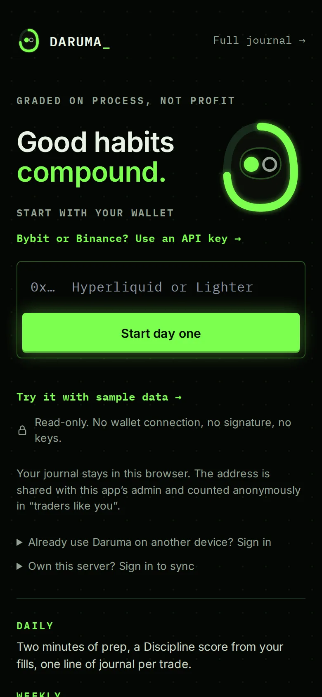
Trading on Bybit or Binance?
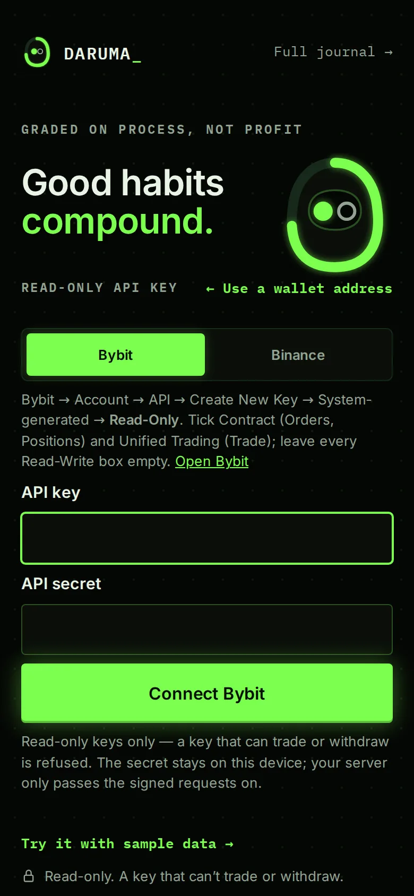
Tap Bybit or Binance? Use an API key on the welcome screen and paste a read-only API key and secret. Daruma refuses any key that can trade, transfer or withdraw.
The secret stays in your browser. Each request is signed on your device and your league's server only passes it on, because the exchanges don't accept calls from a web page directly. Connect the key once per device.
You can add more wallets or exchanges later from Settings (the gear at the top right of Today).
Just looking?
Tap Try it with sample data on the welcome screen. Daruma generates five months of made-up trades so every screen is populated. Nothing is fetched or saved, and anything you log on the sample is thrown away when you load real data or reload the page.
What Daruma reads
Your closed and open trades, funding and fees, deposits and withdrawals, all from the exchange's public data. It never places orders and never holds keys that could. The screenshots in this guide use the sample data.
The five tabs
Everything in Daruma lives under five tabs at the bottom of the screen. On a wide screen they become a sidebar.
| Tab | What it's for | Open it when |
|---|---|---|
| Today | Your three dials, today's numbers, what to do next, and live warnings when you're running hot. | All day. It's the home screen. |
| Stats | P&L, win rate, best and worst markets and hours, what's costing you money, in-depth stats. | Weekly, or when you want to know what to change. |
| Prep | The morning check-in: readiness, a trade cap, a loss limit, today's rules and a one-line plan. | Before your first trade. |
| Social | Your league table, boards, feed, duels, mentors, playbooks and your public profile. | When you want company or competition. |
| Progress | Level and XP, goals, Trader Age, habits and leaks, badges, report cards and the week card you can share. | End of the week. |
If your league owner has switched on the AI coach, a sixth tab, Coach, appears between Prep and Social. You can chat with it about your trading within a daily allowance.
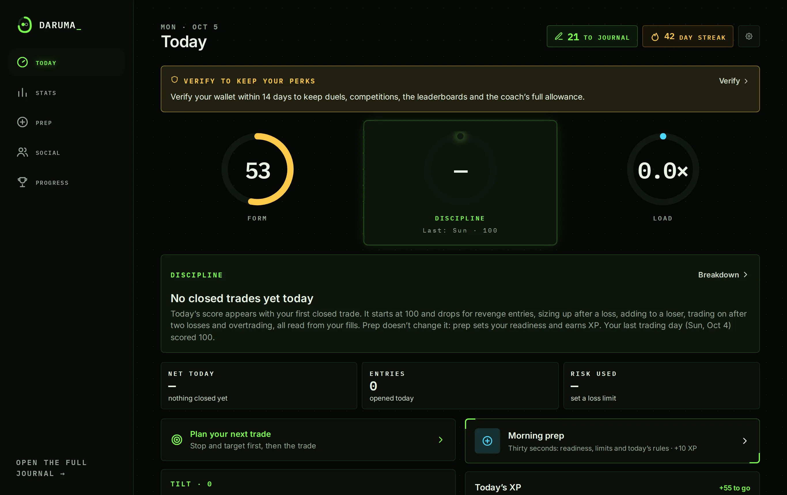
Today
Today is useful before you log anything. Everything at the top is read from your fills.
The three dials
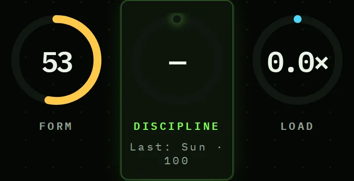
| Dial | What it measures | How to read it |
|---|---|---|
| Form | Your recent trading against your own earlier trading: average trade, win rate and how far you are below your 30-day high. | 50 is your usual. Above it you're trading better than normal, below it worse. Low form is a good reason to trade smaller. |
| Discipline | The share of today's closed trades with none of the six slips (explained below). | 100 is a clean day. It appears with your first closed trade, and starts every day at 100. Under the dial: yesterday's score. |
| Load | How much you've traded today against your usual day: trades opened and size traded. | 1.0× is a normal day. 2.0× means twice your usual. If you set a trade cap in Prep, Load tracks that too. |
The cards under the dials
Scroll down and the day unfolds, card by card. Tap any card with a chevron to open the full screen behind it.
- Discipline explains today's score in a sentence, with a Breakdown of each slip.
- Net today, entries, risk used are your numbers against the limits you set in Prep.
- Plan your next trade opens the plan form (below).
- Tilt is a live reading of the triggers that come before a blow-up. Switch on Notify me to get a nudge even in another tab.
- Trader Age says how seasoned your process looks, in years.
- The coach's line is the one finding from your own trades that matters most right now.
- Your session draws today's P&L curve against your loss limit, with each trade and slip marked.
- Next step is the one thing to do now: morning prep before you trade, the review after.
- Today's XP lists what's still on offer today, and the weekly challenge.
- Last 7 trading days shows Discipline and net day by day.
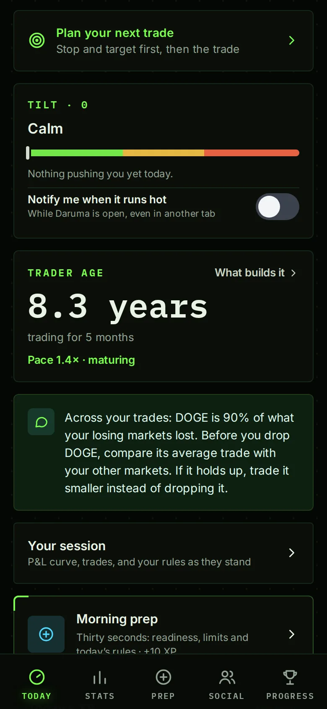
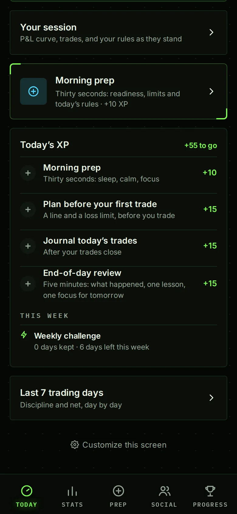
The two counters at the top right of Today are shortcuts. The pencil shows trades waiting to be journaled and opens the journal. The flame is your streak of clean days.
At the bottom of Today, Customize this screen lets you hide any card and put the ones below the dials in your own order. Hidden cards keep working in the background. Your layout syncs with your settings.
Tip
The default Today is lean on purpose. If you like seeing your level and league standing at the top, switch on Level and league in Customize.
Your daily routine
Four short habits. Each is optional, each earns XP, and skipping one never costs you anything. Together they take about ten minutes a day.
| Habit | When | Takes | XP |
|---|---|---|---|
| Morning prep | Before your first trade | 30 seconds | +10 |
| Plan before your first trade | A plan line and a loss limit, saved before you trade | 1 minute | +15 (half if written later that day) |
| Journal today's trades | After your trades close | 1 minute per trade | +15 |
| Stops written | With your journal or plan | seconds | +10 |
| Loss limit respected | No new entry after you've passed your limit | nothing to do | +10 |
| End-of-day review | After your last trade | 5 minutes | +15 |
A day's XP is its Discipline score plus these bonuses, plus any badges, challenges and goals you complete. Your league owner can change the numbers, so yours may differ slightly from this table.
Timing counts
Prep, plans and loss limits pay in full only when they were there before your first trade of the day. You can still open an old day from the calendar and journal it, but it no longer earns XP. This is what keeps the leaderboards honest.
1. Morning prep
Open the Prep tab. Daruma has already guessed your trading style from your last 90 days (scalper, day, swing or position trader) and asks a question or two that fit it. After a few days of answers, the ones you keep giving show up as one-tap usuals.
Then three taps: how you slept, how calm you feel, how focused you are. They become your readiness score for the day. Readiness doesn't change your Discipline. It's there so Stats can later show you which days your discipline tends to break.
Below that, your limits for today:
- Trade cap: how many trades you'll allow yourself. The Entries tile on Today counts against it.
- Stop for the day at a loss of: your daily loss limit in dollars. The Risk used tile fills as you approach it, and the tripwire warns you at 80%.
- Rules for today: structured rules Daruma can check against your fills at the end of the day. Which setups and markets you'll trade, a stop time, a maximum number of open positions, "stop after two losses".
- One-line plan: the sentence you want to remember at 2pm.
Tap Lock in my day. You're done.
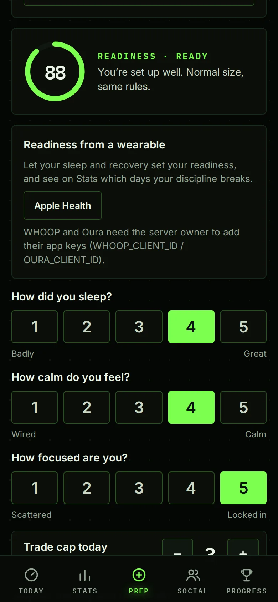
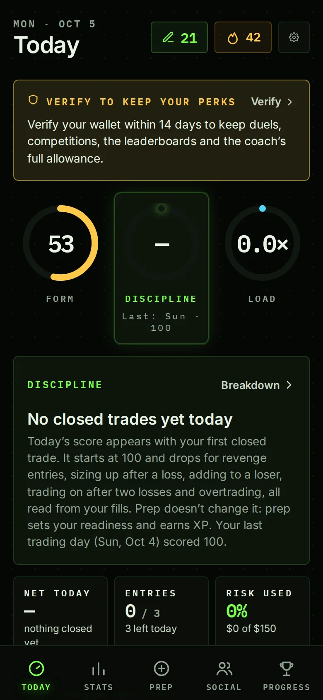
Once your prep is saved, the Today tiles switch from plain counts to progress against your limits. If you wear a WHOOP, an Oura ring, or use Apple Health, Prep can take your readiness from there instead of the three taps (your league owner has to connect the service first).
The Your plan, live card on Today then shows each structured rule as kept, broken or not yet tested, with a countdown to your stop time.
2. Plan a trade
Tap Plan your next trade on Today. The form asks for the market, long or short, your stop (required), and optionally an entry, a target and one line on why.
Save it and it waits in your journal. When you open a trade on that market and side within the next 24 hours, the plan attaches itself to the trade: the stop and target come from it, it counts as a plan written live, and the line becomes the trade's setup. No trade in 24 hours and it quietly expires.
Daruma catches typos: each price has to be within 10× of the market's price, so an extra zero is refused rather than saved.
Later, under Stats → Your plans, you'll see what share of your trades had a plan, how often you followed it, and one sentence on what not following it cost you.
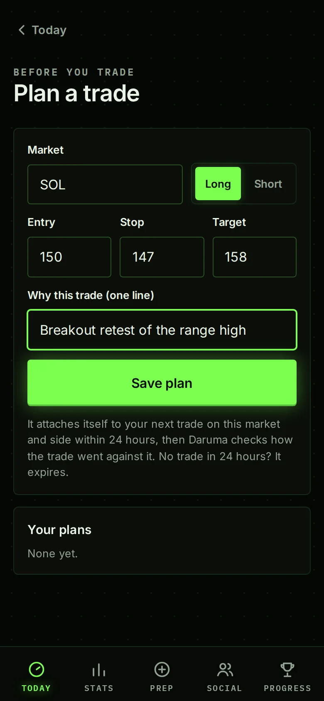
3. Journal your trades
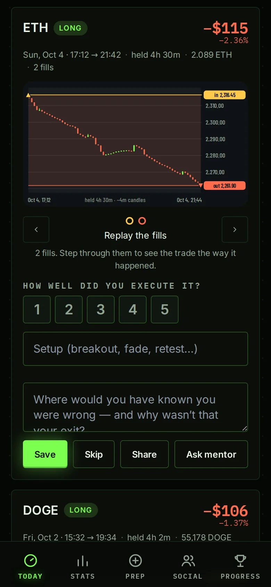
Tap the pencil counter at the top of Today. Every unjournaled trade from the last 30 days gets a card.
Each card shows the market and side, the net result, when it opened and closed, how long it was held, and a chart of the trade: the candles around it, the holding period shaded, every fill marked (▲ a buy, ▼ a sell), your entry and exit as pills on the price axis, and the best and worst points while you were in it. Replay the fills steps through the trade the way it happened.
Then the part that matters:
- Rate the execution from 1 to 5. Rate how well you traded it, not how it paid. A perfectly executed loser is a 5.
- Name the setup (breakout, fade, retest…). Your past tags come back as chips, so Stats can break results down by setup.
- One line on what you'd do differently. The prompt changes with the trade.
Tap Save. The next card is already waiting.
Skip takes a trade out of the backlog without journaling it (no XP, no credit, just out of the way). Clear them at the top skips every trade from before today in one tap, with an Undo until you leave the screen. Today's trades stay: journaling them is today's XP.
If your setup names one of your playbooks, the card shows that playbook's rules as a checklist. Tick the ones you kept and Daruma will tell you, over time, what keeping each rule is worth.
Share posts the trade to your league's feed. Ask mentor sends it to a mentor for review, if your league has them.
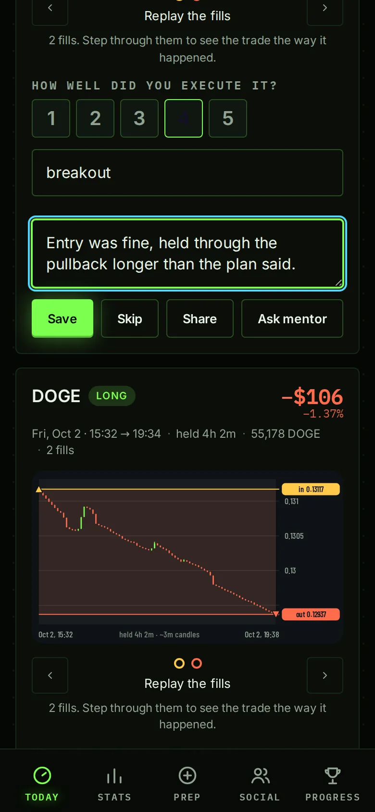
4. End-of-day review
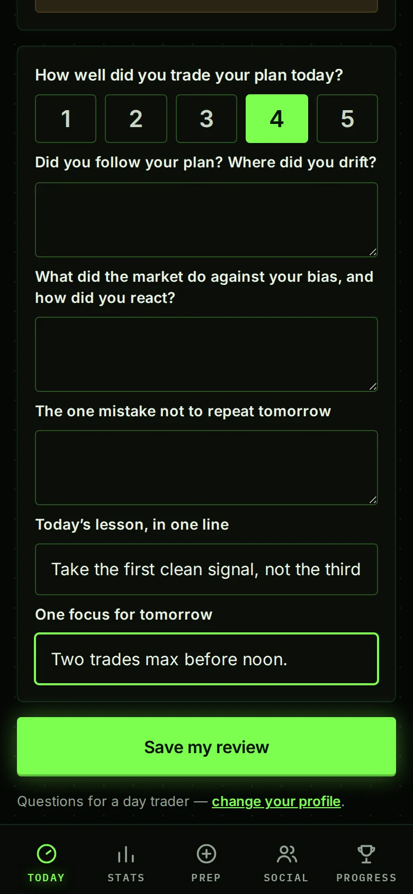
After your last trade, Today's Next step card points to the review. It opens with your day in numbers, then asks how well you traded your plan and a few questions that fit your trading style.
The two lines at the end do the most work:
- Today's lesson, in one line. It goes into your lessons library and comes back to you on Today after 1, 3, 7, 14, 30 and 60 days, until it sticks.
- One focus for tomorrow. It's the first thing you see on Today in the morning.
The review earns +15 XP and feeds your report cards and the coach's line.
The Discipline score
The one number Daruma is built around. It's read from your fills alone, so there's nothing to log, nothing to fake, and profit plays no part.
Each closed trade is clean or has one or more slips. The day's Discipline is the share of clean trades: three clean out of four is 75. "Usual" always means your own history before that day, so a day is never judged against itself.
| Slip | What it means |
|---|---|
| Revenge entry | Opened within 15 minutes of closing a loss. |
| Trading on after two losses | A third trade the same day after two losing ones in a row. |
| Sizing up after a loss | Within 2 hours of a loss, a position over 1.5× your usual size. |
| Adding to a loser | Adding to a position while it was under water. |
| Overtrading | More trades than 1.5× your usual day. |
| Holding a loser | A losing trade held over 3× as long as your usual winner. |
Tap Breakdown on the Discipline card to see which slips happened, how many trades each touched, your last 14 trading days and your streak.
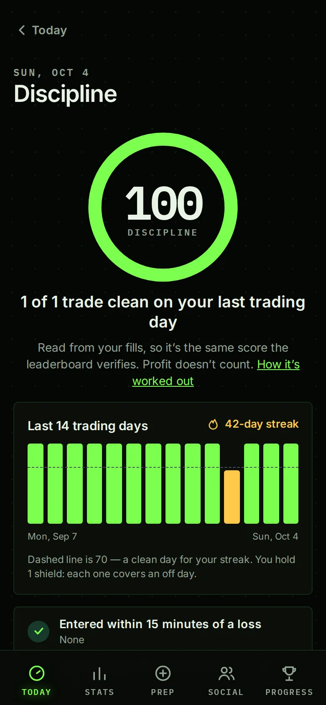
Streaks and shields
A day scoring 70 or more is a clean day and extends your streak. Shields cover the occasional off day so one bad afternoon doesn't erase a month. You earn shields as the streak grows; the Breakdown screen says how many you hold.
Verified Discipline
Because the score comes from public fills, your league's server can work it out itself. Under Social → What you share, switch on Verify my discipline and your score gets a ✓ on the boards. Leaderboards, duels and competitions use verified scores; the banner on Today reminds you if yours isn't verified yet.
What Discipline ignores
Profit, the number of trades, how big your account is, and anything you type. You can have a losing day at 100 and a winning day at 25. That's the point.
Stats
The numbers, and more usefully, what moves them. Pick a range at the top (7, 30 or 90 days, or everything) and perps, spot or both.
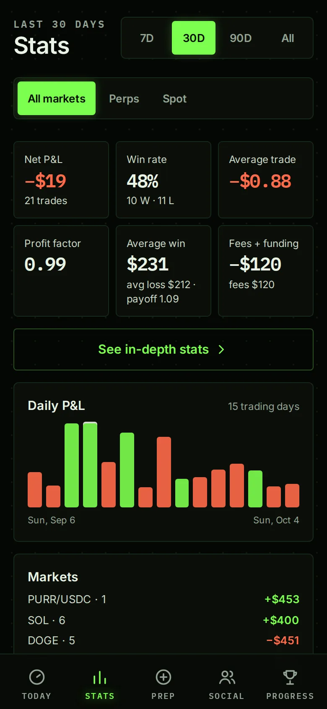
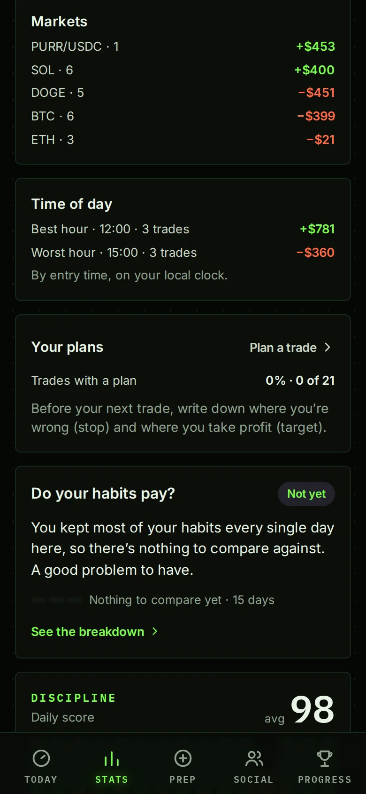
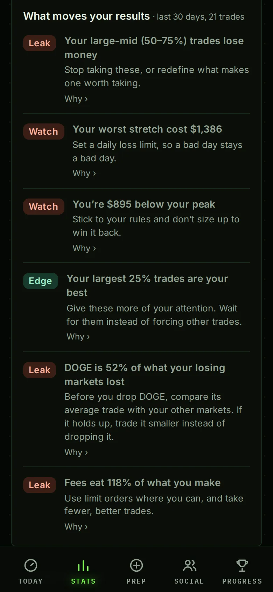
What moves your results
The most useful part of Stats is the list of findings near the bottom. Each is read from your own trades over the range you picked, says what to do about it, and has a Why that shows the numbers behind it.
| Tag | Meaning | Example |
|---|---|---|
| Leak | Something that is costing you money, with a size. | "Fees eat 118% of what you make. Use limit orders where you can." |
| Watch | A risk to keep an eye on, not yet a pattern. | "You're $895 below your peak. Don't size up to win it back." |
| Edge | Something that works. Do more of it. | "Your largest 25% of trades are your best. Wait for them." |
Just above it, Does discipline pay? compares your average day at 70+ with your days under 70, in dollars. For most traders that one comparison is the whole argument for the app.
In-depth stats
Tap See in-depth stats for the full picture over the same range: your equity curve and drawdown, results, consistency and risk figures, what each slip cost against your clean trades, how your trades land by size, P&L by hour and weekday, fees and funding, and tables by market, side, position size, holding time, month, and the market's volatility and trend on the day.
Once you've tagged setups and rated executions in the journal, two more tables appear: results by setup and by your own rating. That's how you find out whether your 5-rated trades really are your best.
Some of the deeper insights unlock as your level rises.
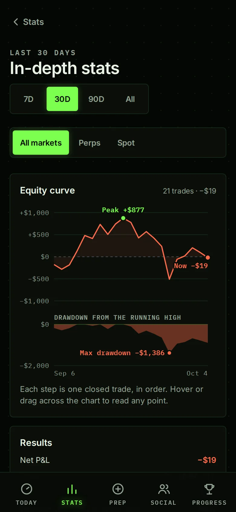
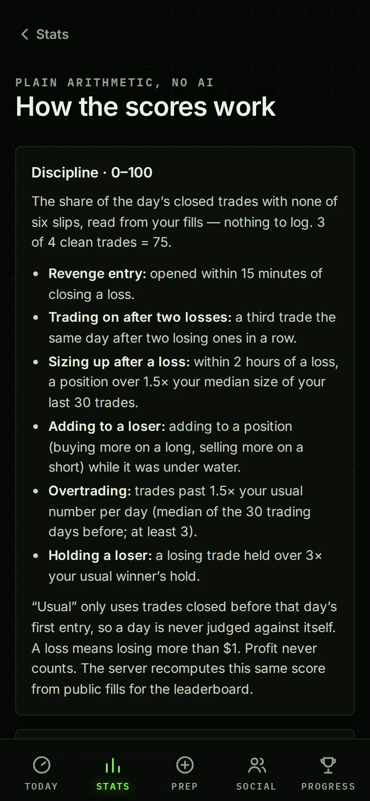
Nothing in Daruma is a black box. How the scores work, at the bottom of Stats, spells out every formula: Discipline, Form, Load, Tilt, market conditions and Trader Age. Plain arithmetic, no AI.
Tip
Set Stats to 90D once a month and read the findings top to bottom. Pick one leak. Plug it (see Progress). Ignore the rest until it's done.
Tilt and quiet mode
Most blow-ups don't start with a bad idea. They start with the next trade after a loss. Daruma watches for that moment and steps in.
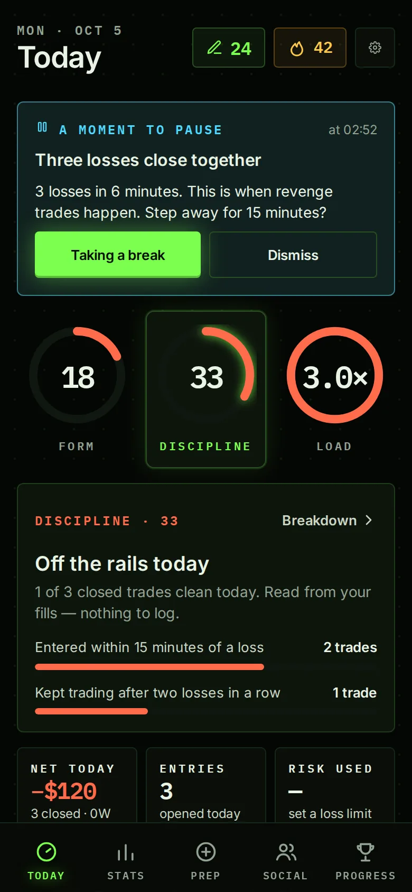
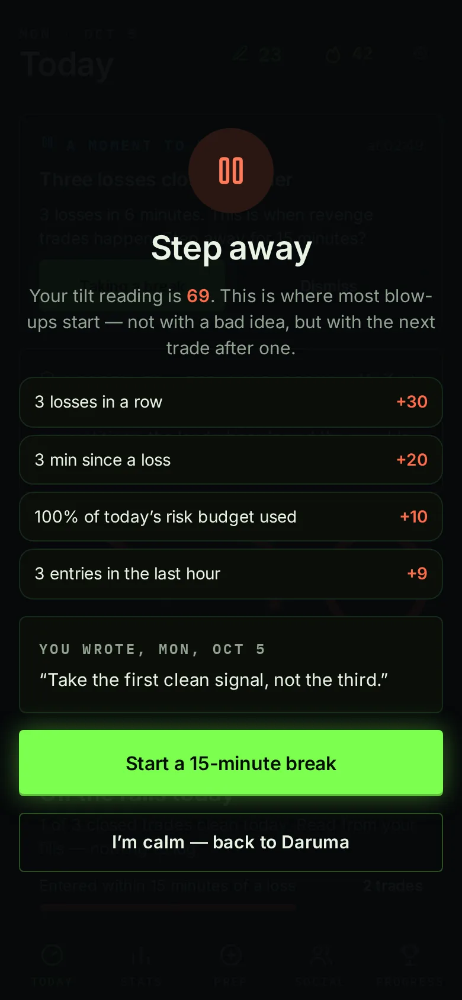
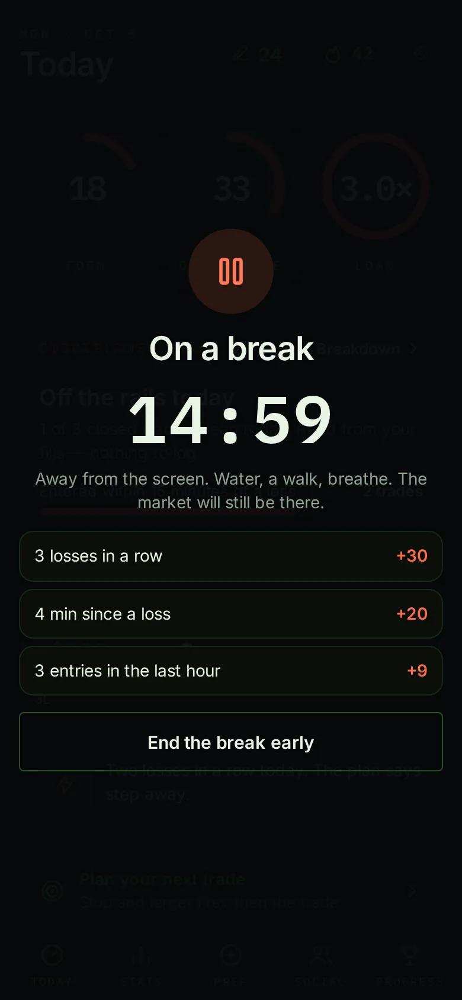
The tilt meter
The Tilt card on Today reads 0 to 100 and adds up today's triggers: losses in a row, a loss in the last 15 minutes, entries at 1.5× your usual size, four entries in an hour, most of your risk budget used, and low readiness from your prep. Profit plays no part. From 35 it reads heating up.
Tilt alerts
After each refresh that brings new trades, Daruma checks the last hour for five specific patterns, such as a re-entry within 15 minutes of a loss or three losses in 45 minutes, and puts a calm banner at the top of Today naming what it saw. Each pattern is said at most once a day. With notifications allowed, it also arrives as a system notification, even with Daruma in another tab.
Quiet mode
At a tilt reading of 65, the next loss or entry opens quiet mode: a full-screen card that lists what pushed the reading up and brings back the lesson you wrote about that very slip. Start a 15-minute break dims the app and counts down. I'm calm closes it. One answer covers one episode. Breaks are logged on the day and never change your Discipline.
Don't want any of this? Settings → Tilt alerts turns it off.
Progress
Everything you've earned by process: your level, your goals, your habits, your badges. Nothing here comes from profit.
Level and XP
XP adds up into levels with names (Rookie, Consistent, Professional, Veteran…). The ring shows how far you are to the next one. Where this week's XP came from breaks the week down by source.
Process goals
Up to three at a time. Tap New goal and pick a target: a month's Discipline average, weeks without one particular slip, a share of the month's trades journaled, days prepped, or weeks inside your loss limit. Each shows a ring and on-track or behind. Reaching one earns the Goal getter badge.
Trader Age
How seasoned your process looks, in years, next to how long you've actually traded. Every ten points of daily rating doubles it, and only trading days count, so a break freezes it. Pace is this week against your six-month norm. Tap What builds it for the parts, what's holding it back, and what each slip costs you in years.
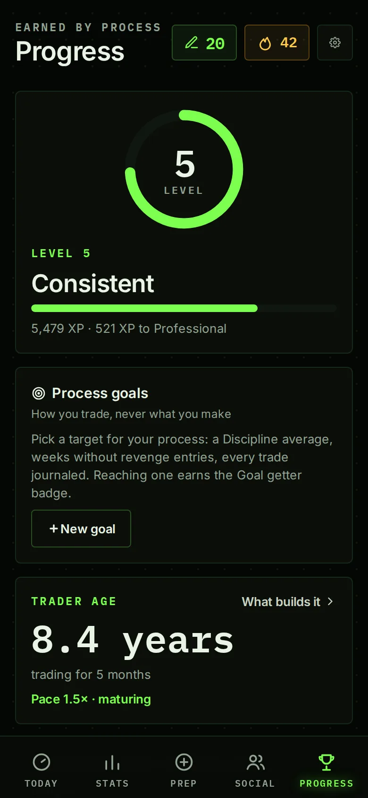
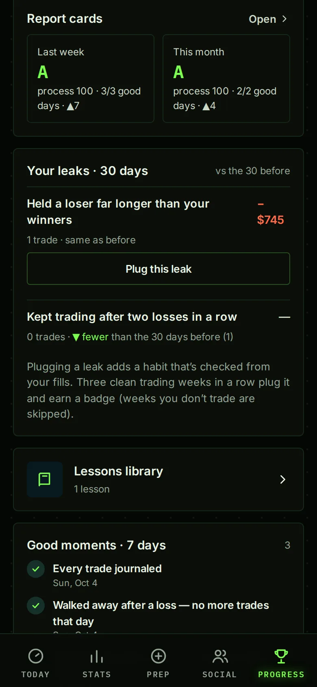
Weekly challenge
One challenge a week, aimed at your biggest leak ("No DOGE trades this week", "No entries within 15 minutes of a loss"). Keep it on every trading day and it pays, typically +150 XP. Pick another if it doesn't fit.
Your leaks and habits
The leak map lists each recurring slip, what it cost you in the last 30 days, and whether it's shrinking. Tap Plug this leak and it becomes a habit checked from your fills. Three clean trading weeks in a row plug it and earn a badge. Weeks you don't trade are skipped; a week with the slip starts the count again.
Good moments are the times you followed a rule that usually costs you, like walking away after a loss. They deserve to be seen too.
Lessons library
Each review's lesson becomes a card that comes back on Today after 1, 3, 7, 14, 30 and 60 days. I still live by it moves it to the next step; I slipped on it restarts it tomorrow. A lesson kept through all six is kept for good. You can add lessons of your own.
Badges
About 270 badges in 45 families, each with six tiers from Bronze to Legend. Discipline, consistency, journaling, risk control, habits, results, milestones, social. New ones are revealed as you earn the earlier ones, so the case never shows you a wall of grey.
Progress shows your latest badges and the ones that are next up with how close you are. See your badge case opens the full collection, filtered by family. Tap any badge to read what it's for.
If you'd like to show them off, Social → What you share can switch on a public badge page at /b/yourname that shows badges, level and streak and nothing else.
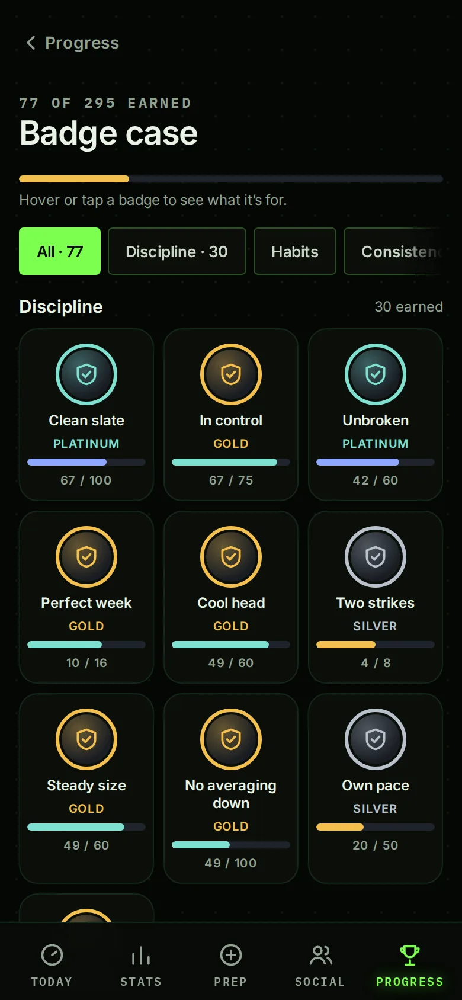
Report cards
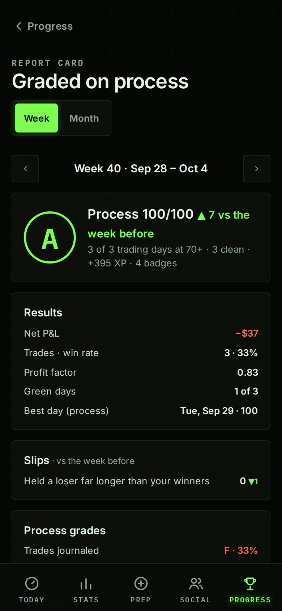
Every week and every month gets a report card with a letter grade for your process, your results for the record, each slip against the period before, how your routines went (days prepped, plans before the first trade, reviews, trades journaled), the badges you earned and a focus for next period.
The grade is for process. You can get an A on a losing week, and an F on a winning one. Flip between weeks and months with the arrows, and share any card as an image.
Share my week
Share my week, at the bottom of Progress, draws an image of your week: the Discipline average as a ring, clean days out of trading days, your streak, level and XP gained, your duel record and your top badges.
It has no dollar amounts and no P&L, on purpose, so you can post it anywhere. Choose 4:5 or square, dark or light, and which parts to show. Then Share to your phone's share sheet, Download, or Copy image. It's drawn in your browser; nothing is sent anywhere.
Share cards unlock at a level your league owner sets.
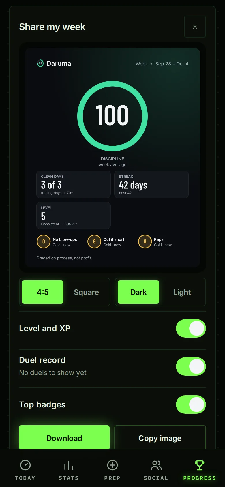
Settings and your data
The gear at the top right of Today, Stats and Progress opens Settings.
- Wallets: add another address, remove one, connect Bybit or Binance, or Refresh now.
- Appearance: Dark, Light, or Auto to follow your phone.
- Colorway: TS9 (the default green), Ink or BB. Colorways apply in dark mode.
- Trader profile: Daruma's guess at your style, or override it. Your prep questions and review questions follow it.
- Tilt alerts: on or off.
- Reminders: push notifications for prep, the review, tilt alerts while Daruma is closed, and league news.
- Your data: where your journal is saved and whether it syncs.
- Install Daruma as an app, and links to this tutorial (How to use Daruma) and the full journal.
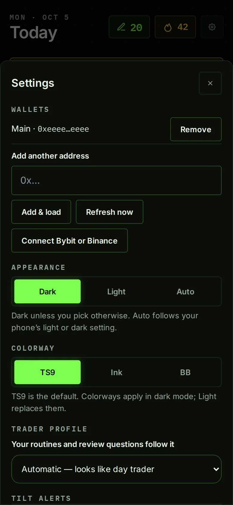
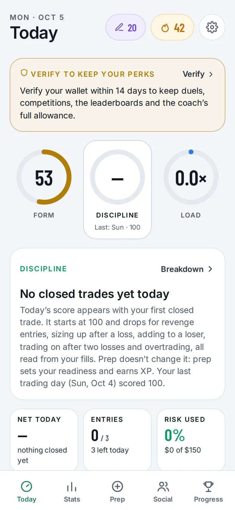
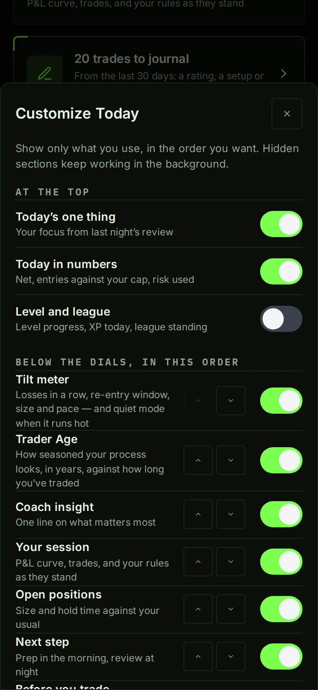
Where your journal lives
Your trades are cached in your browser so loads are quick. Your journal (notes, prep, reviews, plans, settings) is saved in your browser and, on a server with an access token, synced to it, so you can open Daruma on your phone and your laptop and pick up where you left off. The Settings sheet's Your data section tells you which applies to you.
Good to know
If the server has no access token, Settings warns you. In that case everyone who opens the link shares one journal, and you should ask the owner to set one before you log anything personal.
Reset progress awards, at the very bottom of Progress, clears every badge, achievement and completed challenge on all your devices and earns them again from your history. Use it if something looks wrong; it doesn't touch your journal.
Common questions
Why does my Discipline dial show a dash?
Nothing has closed yet today. Today's score appears with your first closed trade. Under the dial you can see your last trading day's score.
I had a great day and my Discipline went down. Why?
Discipline never looks at profit. Check the Breakdown: one of the six slips happened, most often a re-entry within 15 minutes of a loss or adding to a position while it was under water. A profitable slip is still a slip.
Can I journal trades from last week?
Yes. The journal lists every unjournaled trade from the last 30 days, and you can open older days from the calendar. Notes on old days are kept and count toward your stats, but XP is only paid for logging done in time.
Does Daruma trade, or need my private key?
No. It reads public fill data for a wallet address, or uses a read-only exchange API key. It can't place orders, move funds, or see anything a block explorer couldn't.
Why is Form grey or missing?
Form needs about 15 closed trades, with at least 10 before the recent window, and a trade in the last 30 days. It fills in as your history grows.
I got a new phone. How do I get my journal back?
If your league's server syncs your journal, open Daruma on the new phone and sign in: with a passkey, by claiming your wallet, or with a one-time code from Account → Add a device on the old phone. If you aren't on a syncing server, use the full journal's Backup to move it.
Something looks off after a refresh.
Open Settings and tap Refresh now. In the full journal, Shift-click Load all forces a complete re-fetch of your history. A strip under the header flags anything incomplete for as long as it's true.
Where is the full journal?
The link at the bottom of the Settings sheet (or the sidebar on a wide screen) opens the full journal: the trade list, pattern miner, price excursions, exports and backups. Daruma and the journal are the same app with the same data.
Can I turn off the social and competitive parts?
Yes. Don't create a profile, and the Social tab stays empty while everything else works. If you have a profile, every public switch is under What you share, and you can leave the league at any time from Account.
Glossary
- Fill
- One executed order on the exchange. A trade is made of one or more fills.
- Trade
- A position from open to flat, rebuilt from your fills. Partial closes belong to the same trade.
- Slip
- One of the six behaviours Discipline counts against a trade (revenge entry, trading on after two losses, sizing up after a loss, adding to a loser, overtrading, holding a loser).
- Clean day
- A day with Discipline of 70 or more. Clean days extend your streak.
- Shield
- Covers one off day so your streak survives it. Earned as your streak grows.
- XP
- Points for process: your daily Discipline score plus bonuses for prep, plans, journaling and reviews, plus badges, challenges and goals. Never for profit.
- Level
- What your lifetime XP adds up to, with a name for each step.
- Leak
- A recurring slip or pattern that is costing you money, with the amount attached.
- Habit
- A rule Daruma checks for you from your fills, usually created by plugging a leak.
- Playbook
- A setup's name and its rules. Shows up as a checklist on matching journal cards.
- Trader Age
- How seasoned your process looks, in years, from your daily ratings over six months.
- Tilt
- A live 0 to 100 reading of the triggers that come before a blow-up. At 65, quiet mode opens.
- Verified
- A score the server worked out itself from your public fills, marked with a ✓.
- Readiness
- Your morning prep in one number (sleep, calm, focus), or your wearable's score.
- Report card
- The weekly and monthly summary with a letter grade for your process.
Social
Your league. Everyone your owner shared the link with, ranked by process, never by profit.
Joining
Open the Social tab and pick a name (3 to 20 letters, numbers or underscores). That's your profile. If your owner set an invite code, enter it here. Your journal, notes and trades stay on your device; the league only receives the numbers you choose to share.
League
Everyone is ranked by XP earned this week. On Monday the top of each tier moves up a league (Bronze, Silver, Gold, Platinum, Diamond) and the bottom moves down. You can be in several leagues at once; Find leagues lists them.
Under Ranked by, switch the board to Discipline, streak, all-time XP, or, for members who share them, return and drawdown.
Boards
Server-wide leaderboards across all leagues, for members who opted in under What you share.
Feed
What people you follow are up to: trades and plans they posted, milestones, badges, playbooks they shared. Post a trade shares one of yours with your thesis. Discover shows everyone.
Competitions
Time-boxed contests your owner or members set up: a week of clean days, a month of journaling. Prizes are badges and bragging rights, never money.
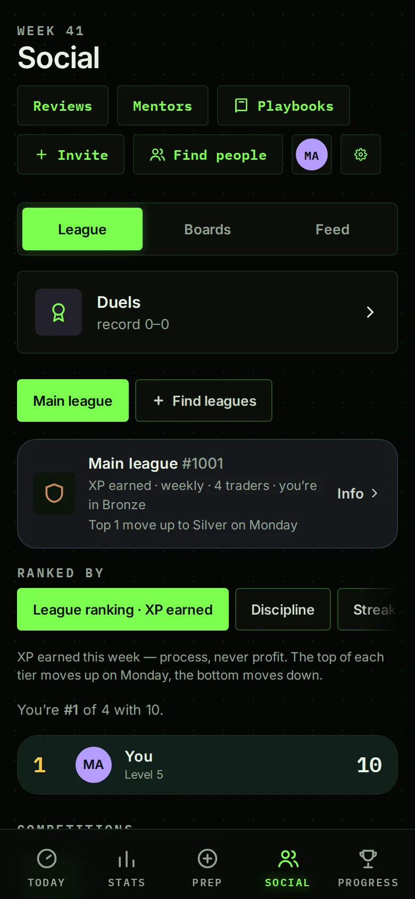
Duels
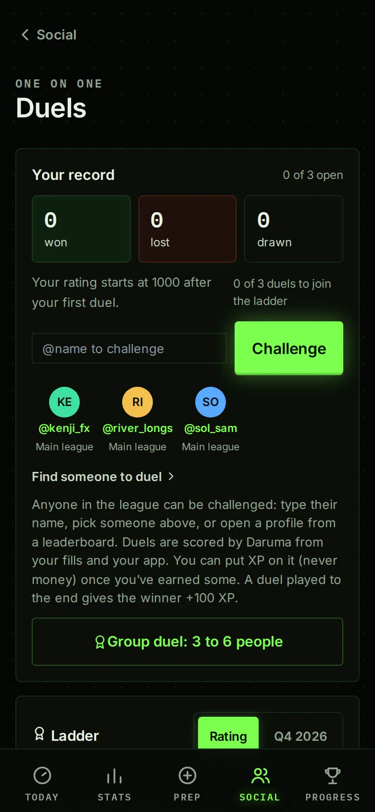
Challenge anyone to a week or a month, one on one: on Discipline, clean days, journaling, last one standing, or process XP. They have 48 hours to accept. Daruma scores it from both your fills. You can put XP on it (never money) once you've earned some, and a duel played to the end gives the winner +100 XP.
After three duels you join the ladder, with a rating that starts at 1000 and moves with each result. Beating a higher rating counts more.
Group duel invites 3 to 6 people to the same contest. It starts the next Monday once three of you are in.
Don't want to be challenged? Switch off Accept duel challenges under What you share.
People, partners and mentors
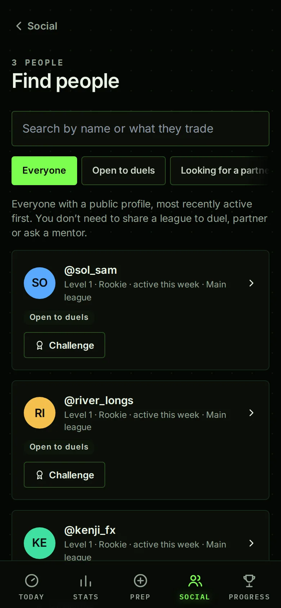
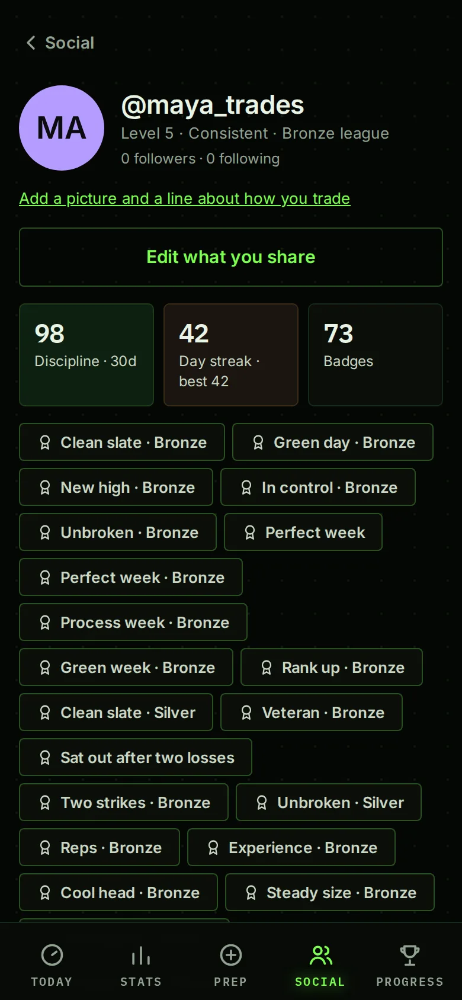
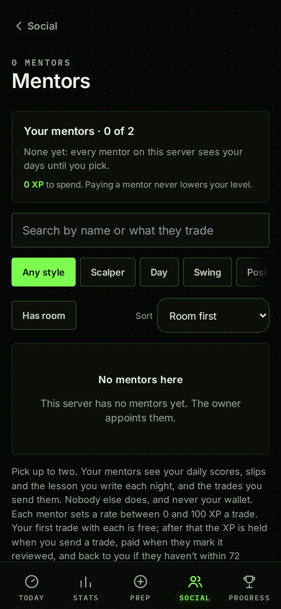
Find people lists everyone with a public profile. Filter to people open to duels, people looking for an accountability partner, or mentors. A partner sees your streak, Discipline and slips (never your trades or P&L), can nudge you, and can share a weekly challenge with you.
Mentors are members your league owner appointed. Pick up to two. They see your daily scores, slips and nightly lesson, and the trades you send them with Ask mentor from a journal card. Each sets a rate in XP per trade reviewed; your first trade with each is free. Their track record (trades reviewed, time to first reply, how many members come back) is measured by the server, not written by them.
Playbooks
A playbook is a setup's name and its rules, one per line: "Breakout retest: wait for the retest, stop under the low, no entry in the first 5 minutes". Write yours under Social → Playbooks.
When a journal card's setup names a playbook, the card shows its rules as a checklist. Tick the ones you kept, and each playbook then shows what keeping its rules is worth, from your own closed trades: kept every rule against broke one, in win rate and result per trade.
Share with the league publishes a playbook's name and rules (never your trades). Members can adopt it into their own list, and hear about it when you improve the rules.
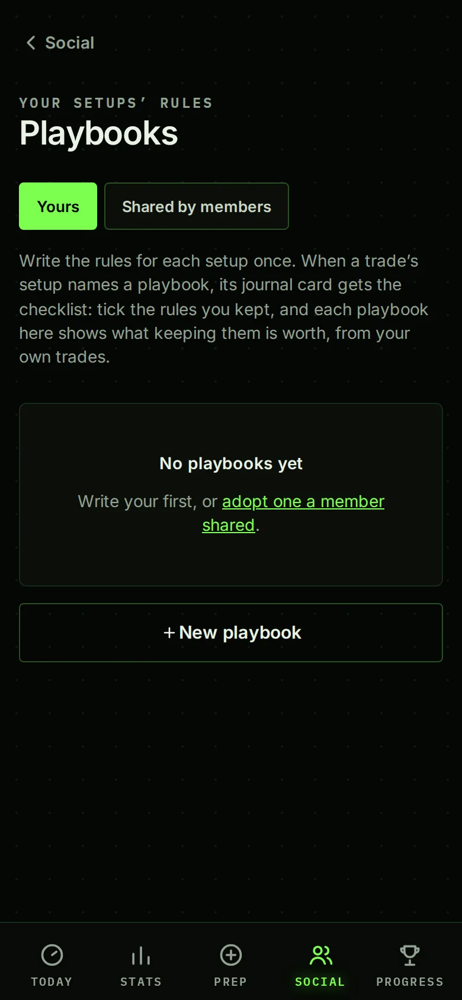
Invite
Social → Invite has your personal link (
/daruma?ref=yourname). When someone joins through it and becomes active, you both earn XP, and you can see which of your links brings people in.What you share, and your account
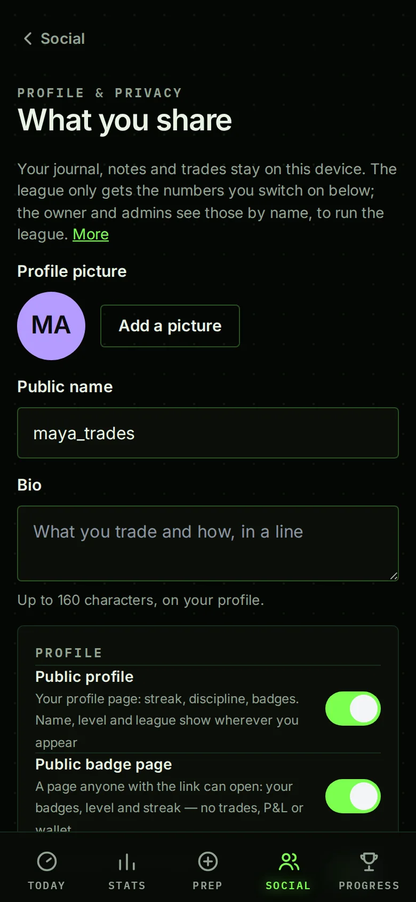
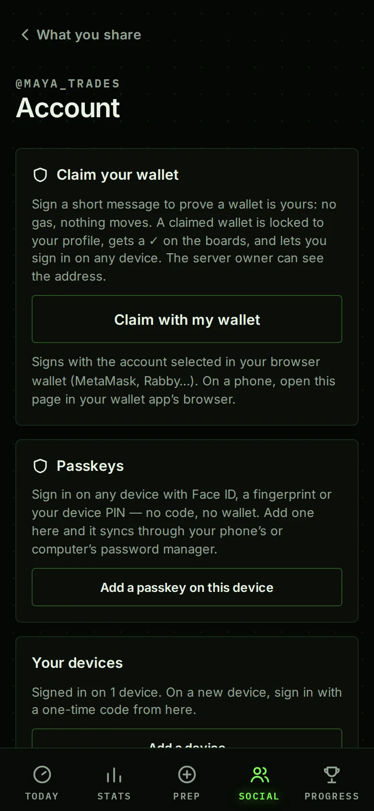
What you share (tap your avatar on Social) is the privacy page. Each switch names exactly what leaves your device: a public profile, a badge page, milestones in the feed, the habits you run, whether mentors can see your days, whether you're open to duels or looking for a partner, the process boards, the global boards, verified Discipline, and whether to show your % return. Dollar P&L is never shared unless you switch it on.
Account is where you make your profile portable. Claim your wallet signs a short message (no gas, nothing moves) to prove the address is yours; a claimed wallet gets a ✓ and lets you sign in anywhere. Add a passkey lets you sign in with Face ID, a fingerprint or your device PIN. Add a device gives you a one-time code for a new phone. Leave the league deletes your profile from the server; your journal isn't touched.